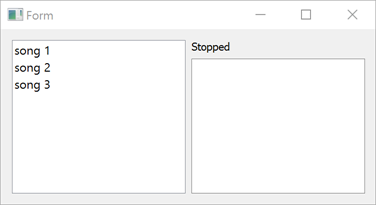

SCXML Media Player
Sends data to and receives it from a C++ data model.

Media Player demonstrates how to access data from a C++ data model. The data model enables writing C++ code for expr attributes and <script> elements. The data part of the data model is backed by a subclass of QScxmlCppDataModel, for which the Qt SCXML compiler (qscxmlc) generates the dispatch methods.
The UI is created using Qt Quick.
Running the Example
To run the example from Qt Creator, open the Welcome mode and select the example from Examples. For more information, visit Building and Running an Example.
Using the C++ Data Model
We specify the data model as a value of the datamodel attribute of the <scxml> element in the SCXML file:
<scxml
xmlns="http://www.w3.org/2005/07/scxml"
version="1.0"
name="MediaPlayerStateMachine"
initial="stopped"
datamodel="cplusplus:TheDataModel:thedatamodel.h"
The format of the datamodel attribute is: cplusplus:<class-name>:<classdef-header>. Therefore, we need a file called thedatamodel.h that contains a subclass of QScxmlCppDataModel:
#include "qscxmlcppdatamodel.h" #include <QtQml/qqml.h> class TheDataModel: public QScxmlCppDataModel { Q_OBJECT Q_SCXML_DATAMODEL
QScxmlCppDataModel derives from QObject, so we add the Q_OBJECT macro in the private section of the definition, right after the opening bracket. We then place the Q_SCXML_DATAMODEL macro after Q_OBJECT. The macro expands to the declaration of virtual methods, the implementation of which is generated by the Qt SCXML compiler.
In the SCXML file, we specify C++ statements in the <script> element and use the expr attribute to access the data model:
<state id="stopped">
<transition event="tap" cond="isValidMedia()" target="playing"/>
</state>
<state id="playing">
<onentry>
<script>
media = eventData().value(QStringLiteral("media")).toString();
</script>
<send event="playbackStarted">
<param name="media" expr="media"/>
</send>
</onentry>
<onexit>
<send event="playbackStopped">
<param name="media" expr="media"/>
</send>
</onexit>
<transition event="tap" cond="!isValidMedia() || media == eventData().value(QStringLiteral("media"))" target="stopped"/>
<transition event="tap" cond="isValidMedia() && media != eventData().value(QStringLiteral("media"))" target="playing"/>
</state>
The Qt SCXML compiler generates the various evaluateTo methods and converts the expressions and scripts into lambdas inside those methods in mediaplayer.cpp:
bool TheDataModel::evaluateToBool(QScxmlExecutableContent::EvaluatorId id, bool *ok) { .... return [this]()->bool{ return isValidMedia(); }(); .... } QVariant TheDataModel::evaluateToVariant(QScxmlExecutableContent::EvaluatorId id, bool *ok) { .... return [this]()->QVariant{ return media; }(); .... } void TheDataModel::evaluateToVoid(QScxmlExecutableContent::EvaluatorId id, bool *ok) { .... [this]()->void{ media = eventData().value(QStringLiteral("media")).toString(); }(); .... }